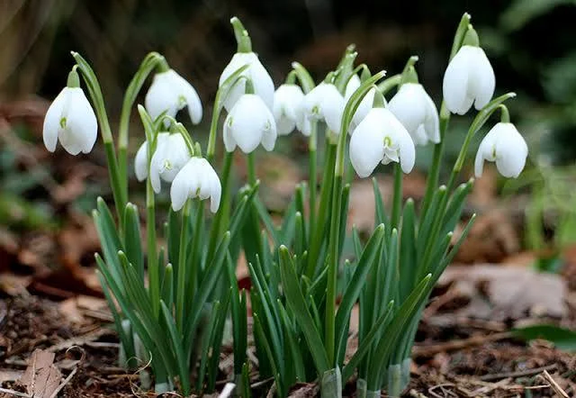

🌿 Կենսաբազմազանության պահպանություն
ՀՀ բնության պահպանությունն ու կենսաբազմազանությունը կարևոր են էկոհամակարգի առողջության համար։ Հայաստանում պահպանվում են բազմաթիվ հազվադեպ ու եզակի կենդանիներ և բույսեր։
🐻 Հայկական կարպի կամ սովորական ծածան

Հայկական կարպը (Cyprinus carpio) հանդիպում է տարբեր ջրերում։ Հայկական բնություն պահպանելու համար կարևոր է կանխարգելել դրանց վերացումը։ Արտաքին տեսքը` մարմինը հաստ է, ծածկված մեծ թեփուկներով, ունի 3-4 մեջքային փշիկ: Վայրի տեսակները (Սազան) հիմնականում լինում են գորշ կանաչավուն:
🦅 Տափաստանային արծիվ

Տափաստանային արծիվը մուգ փետուրներով խոշոր արծիվ է։ Կտուցը շատ մեծ է և մուգ, ոտքերը փետրավորված են մինչև մատների ծայրը: Ծոծրակում հաճախ կարելի է հանդիպել ժանգաշիկագույն հատված: Երիտասարդ թռչունները բաց գորշագույն են` մուգ կետիկներով:
🌸 Հայկական լեռնաշատ բույսեր

ՀՀ լեռներում և անտառներում աճում են բազմաթիվ բույսեր, որոնք յուրահատուկ են ոչ միայն Հայաստանի համար, այլև ամբողջ տարածաշրջանի համար։